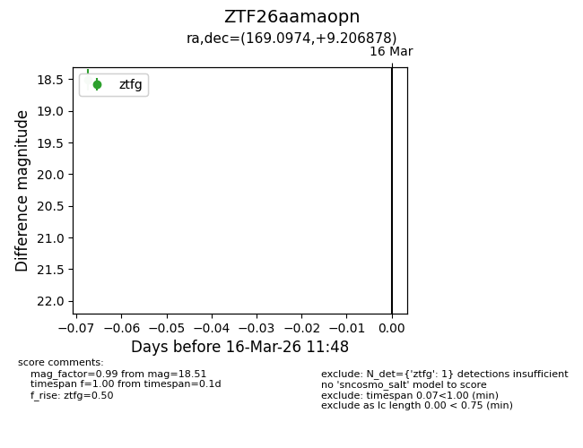
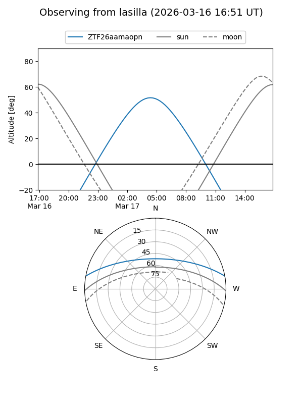
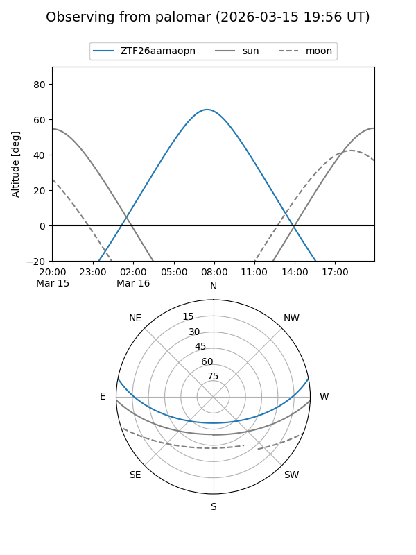

ZTF26aamaopn
Target ZTF26aamaopn at 2026-03-16 11:50
Aliases and brokers:
FINK: link
Lasair: link
ALeRCE: link
alt names
ZTF26aamaopn (ztf,fink_ztf)
Coordinates:
equatorial (ra, dec) = 169.0974,+9.20688
equatorial (HMS+DMS) = 11:16:23.37,+09:12:24.76
galactic (l, b) = (247.0574,+61.28307)
Flags:
Photometry:
last ztfg=18.51
1 ztfg detections
Lightcurve

Visibility


Additional plots